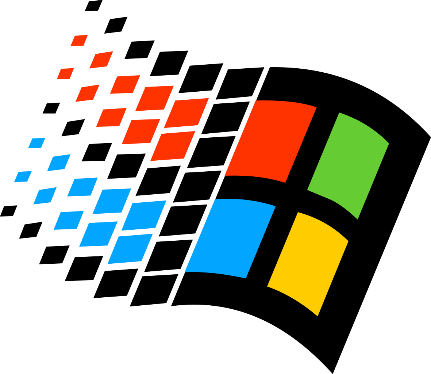
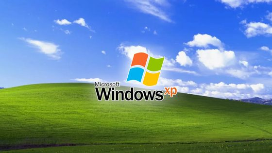
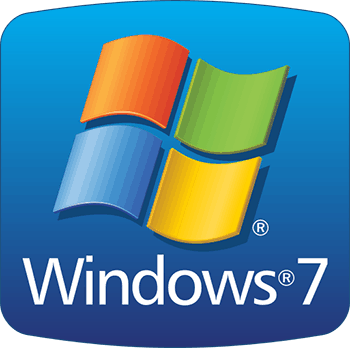
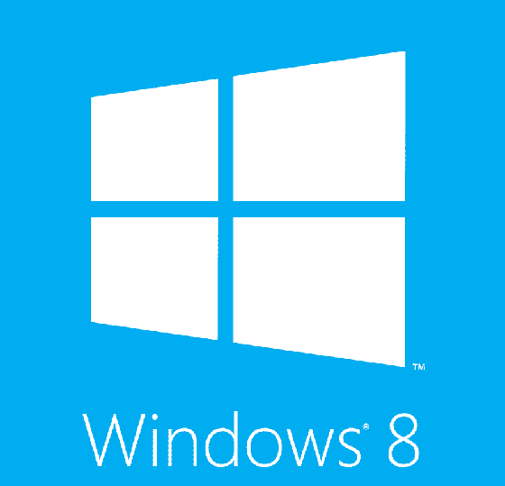
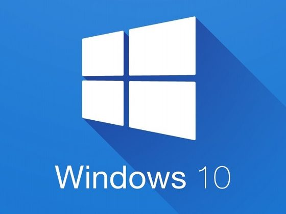
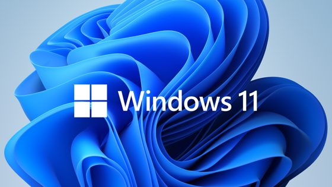
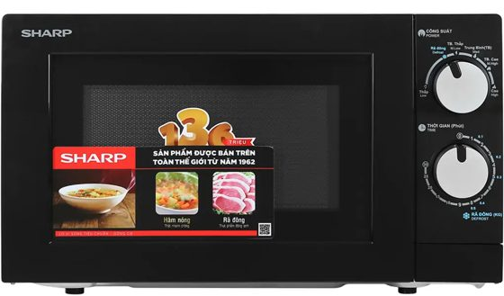
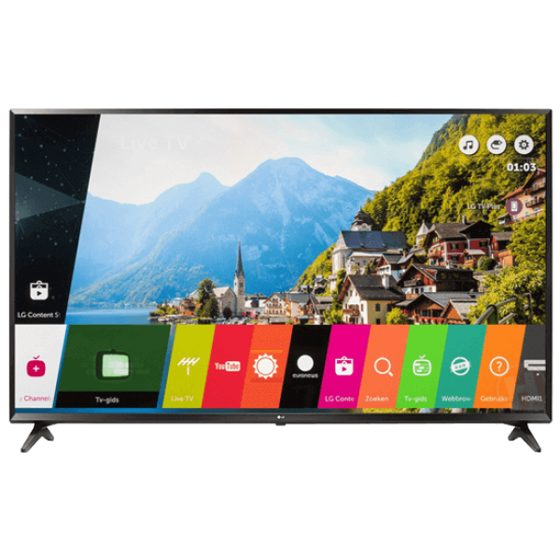
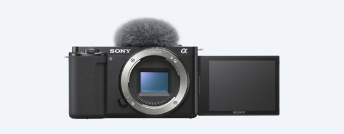

Quản lí thiết bị
Điều khiển chuột, bàn phím, màn hình, máy in…
Ví dụ: em cắm chuột mới, máy tự nhận ra.
Tin học 11 · Chủ đề 1: Máy tính và xã hội tri thức
Mỗi lần em bật máy, mở ứng dụng hay cắm USB, luôn có một phần mềm đứng giữa làm mọi việc. Bài này giúp em hiểu phần mềm đó là gì, nó đã thay đổi ra sao và vì sao máy nào cũng cần nó.
Khởi động
Nghĩ khoảng 30 giây, rồi bấm nút để so sánh với gợi ý.
Hãy hình dung máy tính là một tòa nhà. Hệ điều hành là ban quản lí tòa nhà: giữ chìa khóa các phòng, sắp xếp đồ đạc, cho người vào làm việc và lo dịch vụ chung. Công việc đó chia thành 5 nhóm:
Điều khiển chuột, bàn phím, màn hình, máy in…
Ví dụ: em cắm chuột mới, máy tự nhận ra.
Cất tệp vào ổ đĩa, tổ chức theo thư mục.
Ví dụ: lưu bài tập vào thư mục "Tin học".
Ứng dụng nào cũng phải "đứng" trên hệ điều hành mới chạy được.
Ví dụ: nháy đúp biểu tượng là mở được Word.
Biểu tượng, cửa sổ, con trỏ chuột giúp em ra lệnh dễ dàng.
Ví dụ: kéo tệp vào thùng rác để xóa.
Các công cụ giúp dùng máy tốt hơn, an toàn hơn.
Ví dụ: sao lưu dữ liệu, phòng chống virus.
Máy ngày càng dễ dùng. Giao diện đồ họa thay cho việc gõ lệnh: em chỉ cần nhìn và bấm.
Hệ điều hành có thêm nhiều công cụ. Thiết bị di động có rất nhiều tiện ích cá nhân.
Nghĩa là "cắm là chạy". Cắm thiết bị vào, hệ điều hành tự nhận ra mà em không phải cài đặt rắc rối.
Trình duyệt của em chưa hỗ trợ 3D (WebGL). Xem phần giải thích bên cạnh nhé.
Kéo để xoay · Bấm vào khung rồi cuộn chuột (hoặc chụm 2 ngón) để phóng to · Bấm vào từng bộ phận
Bấm vào màn hình, bàn phím, chuột, CPU, bộ nhớ hoặc ổ cứng để biết hệ điều hành làm gì với nó.

Phiên bản đầu tiên được phát hành.
Bắt đầu đa nhiệm (chạy nhiều việc cùng lúc), giao diện mới, làm việc được với mạng.
Đầu tiên tích hợp trực tiếp các tính năng cơ bản của hệ điều hành; lần đầu dùng plug & play.

Một trong các hệ điều hành thành công nhất của Microsoft. Đến nay vẫn được nhiều người tin dùng.




Mới nhất của Microsoft tính đến 10/2021.
Windows hầu như thống trị thị trường hệ điều hành máy tính cá nhân.
Chọn một thẻ việc, rồi chọn nhóm chức năng phù hợp. Trên máy tính, em có thể kéo thả thẻ.
Sắp từ cũ nhất (trên) đến mới nhất (dưới) bằng nút ▲ ▼ hoặc kéo thả, rồi bấm "Kiểm tra".
Điện thoại không chỉ để nghe, gọi. Nó còn chụp ảnh, nhắn tin, gửi thư, quản lí danh bạ…
Máy đi theo người nên phải vào được Internet ở mọi nơi.
Cảm biến giúp máy "hiểu" em đang làm gì, ví dụ xoay ngang thì màn hình xoay theo.
Trình duyệt của em chưa hỗ trợ 3D (WebGL). Xem phần giải thích bên cạnh nhé.
Kéo để xoay · Bấm vào màn hình, camera, cảm biến, sóng
Mỗi bộ phận gắn với một đặc trưng của hệ điều hành di động.
Thiết bị di động phổ biến vì có nhiều tiện ích. Muốn ai cũng dùng được thì tính thân thiện, dễ dùng phải đứng hàng đầu.
Máy di chuyển theo người, nên phải kết nối Internet ở bất cứ đâu qua 3G, 4G, 5G, hoặc wifi, bluetooth trong phạm vi hẹp.
Chọn một ô bên trái, rồi chọn ô phù hợp bên phải. Ghép nhanh và ít sai nhất có thể!
Có. Nhiều thiết bị được điều khiển bởi bộ vi xử lí, chương trình được ghi sẵn trong bộ nhớ ROM. Bật lên là chạy, không cần hệ điều hành.
Ví dụ: hệ thống điều khiển lò vi sóng. Nó chỉ làm vài việc cố định: hâm, rã đông, hẹn giờ.

Trình duyệt của em chưa hỗ trợ 3D (WebGL), đây là sơ đồ thay thế.
Kéo để xoay · Bấm vào từng tầng
Hoặc bấm "Xem lệnh In bài" để thấy hệ điều hành làm trung gian thế nào.
Phần mềm ứng dụng khai thác phần cứng thông qua hệ điều hành, không điều khiển trực tiếp linh kiện.
Hệ điều hành cùng phần cứng tạo ra một máy ảo có giao diện thuận lợi cho người dùng.
Là môi trường để phần mềm ứng dụng khai thác hiệu quả phần cứng.
Khách không vào bếp tự nấu. Khách gọi món, bếp trưởng phân việc và dùng bếp núc để làm ra món ăn.
Để chạy được nhiều ứng dụng khác nhau, cần có phương tiện quản lí lưu trữ phần mềm và dữ liệu (nhất là khi chạy nhiều ứng dụng), cần phối hợp thiết bị hiệu quả và cần giao diện làm việc cho người dùng. → Cần một phần mềm làm môi trường chung để chạy các ứng dụng: đó là hệ điều hành.
Hệ điều hành cung cấp các dịch vụ sử dụng phần cứng. Các chương trình ứng dụng khai thác phần cứng qua các dịch vụ của hệ điều hành.
Xem từng thiết bị và chọn câu trả lời. Giữ chuỗi đúng càng dài càng tốt!
5 nhóm chức năng. Phát triển theo hướng thân thiện và tăng cường tiện ích. Windows thống trị; LINUX có gốc từ UNIX.
Nhiều tiện ích cá nhân, kết nối mạng không dây, giao diện tiện lợi nhờ cảm biến. Phổ biến: Android, iOS.
Người dùng → Ứng dụng → Hệ điều hành → Phần cứng. Hệ điều hành là trung gian và môi trường chung.
Tính thân thiện thể hiện ở sự phù hợp với các quan niệm thông thường (ví dụ: đối tượng thể hiện bằng biểu tượng, xóa tệp bằng cách kéo vào biểu tượng thùng rác), dễ thao tác, dễ học.
Một vài phương tiện chính trên Windows:


Về nhà tìm hiểu tại: vi.wikipedia.org/wiki/Unix
Chọn đáp án cho tất cả câu hỏi rồi bấm "Nộp bài". Em sẽ biết điểm và xem lại lời giải.